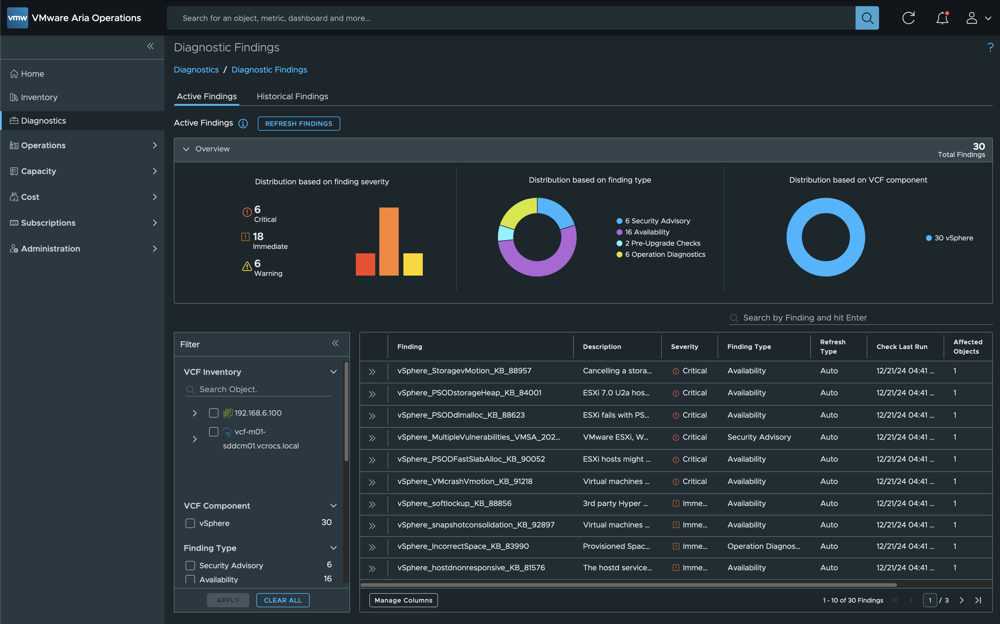
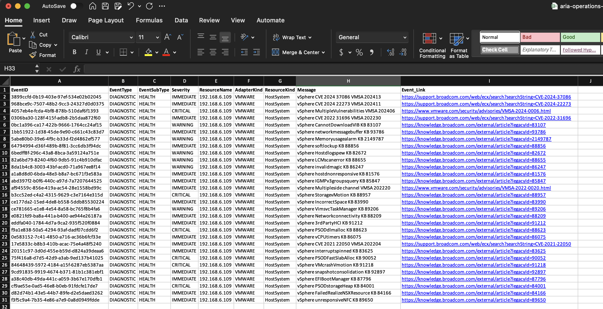
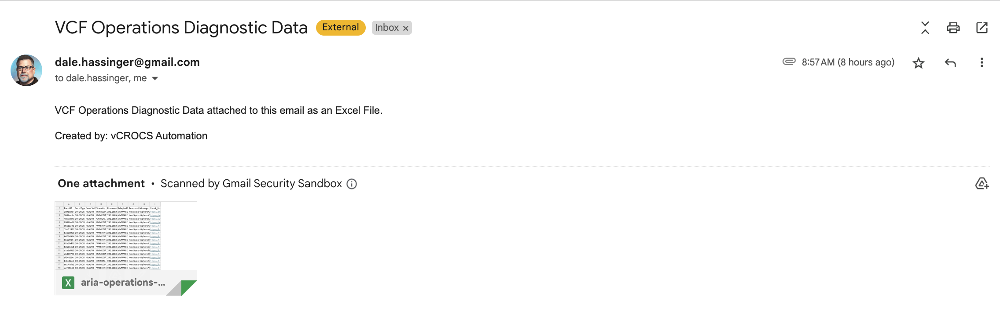

VCF Operations | Extract Diagnostics Events Script
Example PowerShell Script to Extract Diagnostics Events from VCF Operations
Alone we can do so little; together we can do so much. – Helen Keller
Product Versions used for this Blog:
- VCF Operations: 8.18.2
- PowerCLI: 13.3
- PowerShell: 7.4.6
- importExcel PS Module: 7.8.10
Brock Peterson released a blog titled "Extracting Diagnostics Events from Aria Operations" on December 16, 2024. Prior to reading this blog, I was unaware that the diagnostic data added to VCF Operations could be extracted using the VCF Operations API. This is an excellent read that you should check out before working with the example PowerShell script shared within this blog post.
I've received several inquiries from people asking how to extract diagnostic data from VCF Operations since the VMware Skyline service was officially retired (EOL). In the past, VMware Technical Adoption Managers (TAMs) relied on VMware Skyline data to help customers ensure their environments remained up to date with the latest patches. This script could potentially serve as an alternative for extracting diagnostic data from VCF Operations and sharing it with a TAM.
If you don't have a VMware TAM but still want to share this data with your internal VMware team, this script will work perfectly for that use case as well. The Excel file generated by this script can also be used to provide your security team with insights into the diagnostic data available within VCF Operations.
For automating this script to run on a weekly or daily basis, I recommend using VCF Orchestrator, which is part of VCF Automation.
I also have the example code saved in my GitHub Repository
Code Details:
- Demonstrates how to connect to the VCF Operations API
- Generates a token for making API requests
- Creates an Excel spreadsheet to save the events using the
importExcelPowerShell module - Includes optional code to send the newly created Excel file as an email attachment
# Import the ImportExcel module (requires prior installation)
Import-Module ImportExcel
# ----- Configuration and Credentials (Replace with secure methods in production) -----
$opsURL = "https://vao.vcrocs.local" # Your VCF Operations URL
$opsUsername = "admin"
$opsPassword = "VMware1!" # Use a secure vault or secret manager in production
$authSource = "local"
# ----- Acquire Aria Operations Token -----
$uri = "$opsURL/suite-api/api/auth/token/acquire?_no_links=true"
# Create authentication body
$bodyHashtable = @{
username = $opsUsername
authSource = $authSource
password = $opsPassword
}
# Convert body to JSON
$body = $bodyHashtable | ConvertTo-Json
# Request token
$token = Invoke-RestMethod -Uri $uri -Method Post -Headers @{
"accept" = "application/json"
"Content-Type" = "application/json"
} -Body $body -SkipCertificateCheck
$authorization = "OpsToken " + $token.token
# ----- Retrieve Diagnostic Events -----
$uri = "$opsURL/suite-api/internal/events?active=true&diagnosticSubType=HEALTH&page=0&pageSize=1000&type=DIAGNOSTIC&_no_links=true"
$results = Invoke-RestMethod -Uri $uri -Method Get -Headers @{
"accept" = "application/json"
"X-Ops-API-use-unsupported" = "true"
"Authorization" = $authorization
} -SkipCertificateCheck
$OPSDiagData = $results.events
# ----- Prepare Excel Output -----
$excelFilePath = "/Users/hdale/github/PS-TAM-Lab/aria-operations-diag-data.xlsx"
$sheetName = "Diagnostic-Data"
# Clear existing data in the worksheet
Export-Excel -Path $excelFilePath -WorksheetName $sheetName -ClearSheet
# ----- Process Events and Export Data -----
Try {
foreach($OPSDiagEvent in $OPSDiagData){
# Extract resource ID and clean up message content
$resourceId = $OPSDiagEvent.resourceId
$messageContent = $OPSDiagEvent.message -replace "[:_]", " "
# Remove GUID patterns from messages
$regex = "[0-9a-f]{8}-[0-9a-f]{4}-[0-9a-f]{4}-[0-9a-f]{4}-[0-9a-f]{12}"
$messageContent = $messageContent -replace $regex, "" | ForEach-Object { $_.TrimStart() }
# Process Rule ID and generate Event Link
$ruleID = $OPSDiagEvent.details | Where-Object { $_.key -eq "ruleId" } | Select-Object -ExpandProperty value
$eventLink = ""
if ($ruleID -match "KB_(\d{5,7})$") {
$KBNumber = $matches[1]
$eventLink = "https://knowledge.broadcom.com/external/article?legacyId=$KBNumber"
} elseif ($ruleID -match "CVE_\d{4}_\d{5}") {
$CVENumber = $matches[0] -replace "_", "-"
$eventLink = "https://support.broadcom.com/web/ecx/search?searchString=$CVENumber"
} elseif ($ruleID -match "VMSA_(\d{4})(\d{2})") {
$CVENumber = "VMSA-$($matches[1])-00$($matches[2])"
$eventLink = "https://www.vmware.com/security/advisories/$CVENumber.html"
} else {
$eventLink = "NA"
}
# Fetch Resource Details
$uri = $opsURL + '/suite-api/api/resources/' + $resourceId + '?_no_links=true'
$IDresults = Invoke-RestMethod -Uri $uri -Method Get -Headers @{
"accept" = "application/json"
"Authorization" = $authorization
} -SkipCertificateCheck
# Prepare data for export
$newData = @(
[PSCustomObject]@{
EventID=$OPSDiagEvent.eventId;
EventType=$OPSDiagEvent.eventType;
EventSubType=$OPSDiagEvent.diagnosticSubType;
Severity=$OPSDiagEvent.severity;
ResourceName=$IDresults.resourceKey.name;
AdapterKind=$IDresults.resourceKey.adapterKindKey;
ResourceKind=$IDresults.resourceKey.resourceKindKey;
Message=$messageContent;
Event_Link=$eventLink
}
)
# Append data to Excel sheet
$newData | Export-Excel -Path $excelFilePath -WorksheetName $sheetName -Append
}
} Catch {
Write-Error "An error occurred: $_"
}
# ----- Email Report with Excel Attachment -----
$fromEmail = "dale.hassinger@gmail.com"
$toEmail = "dale.hassinger@vcrocs.info"
$subject = "VCF Operations Diagnostic Data"
# Build email body
$body = '<!DOCTYPE html><html><head><meta charset="UTF-8"><title>vCROCS Automation</title><style>body {font-family: Arial;}</style></head><body><p>Diagnostic Data attached.</p><p>Created By: vCROCS Automation</p></body></html>'
$smtpServer = "smtp.gmail.com"
$smtpPort = 587
$appPassword = "kl-HackMe-tl"
$emailMessage = New-Object system.net.mail.mailmessage
$emailMessage.From = $fromEmail
$emailMessage.To.Add($toEmail)
$emailMessage.Subject = $subject
$emailMessage.Body = $body
$emailMessage.IsBodyHtml = $true
if (Test-Path $excelFilePath) {
$attachment = New-Object System.Net.Mail.Attachment($excelFilePath)
$emailMessage.Attachments.Add($attachment)
} else {
Write-Host "Attachment not found: $excelFilePath"
exit 1
}
$smtpClient = New-Object system.net.mail.smtpclient($smtpServer, $smtpPort)
$smtpClient.EnableSsl = $true
$smtpClient.Credentials = New-Object System.Net.NetworkCredential($fromEmail, $appPassword)
try {
$smtpClient.Send($emailMessage)
Write-Host "Email sent successfully."
} catch {
Write-Host "Failed to send email: $_"
}
$smtpClient.Dispose()
$attachment.Dispose()Screen Shots:
Screen Shot of the VCF Operations - Diagnostics:

Screen Shot of the VCF Operations Diagnostics Events Excel Spreadsheet:

Screen Shot of the VCF Operations Diagnostics Events Email:

Lessons Learned:
- The
importExcelPowerShell module is excellent for saving VCF Operations events. - Thanks to Doug Finke for creating and sharing the importExcel PS module with the community
- The VCF Operations API offers a method to extract diagnostic events.
- Special thanks to Brock Peterson for creating the blog that demonstrates how to use the VCF Operations Diagnostics API to extract diagnostic events.
- Link to Brock's blog titled: "Extracting Diagnostics Events from Aria Operations"
- I've always enjoyed working with Brock. You won't find anyone who shares more insights into how VCF Operations works.
- Brock's "How To" guides on VCF Operations are some of the best available.
- Be sure to bookmark Brock's blog to enhance your VCF Operations knowledge!
- Brock has been a role model to me for many years. You won't find a better team player out there.
I created a Google NotebookLM Podcast based on the content of this blog. While it may not be entirely accurate, is any podcast ever 100% perfect, even when real people are speaking? Take a moment to listen and share your thoughts with me!
vCROCS Deep Dive Podcast | VCF Operations | Extract Diagnostics Events Script
In my blogs, I often emphasize that there are multiple methods to achieve the same objective. This article presents just one of the many ways you can tackle this task. I've shared what I believe to be an effective approach for this particular use case, but keep in mind that every organization and environment varies. There's no definitive right or wrong way to accomplish the tasks discussed in this article.
Always test new setups and processes, like those discussed in this blog, in a lab environment before implementing them in a production environment.
If you found this blog article helpful and it assisted you, consider buying me a coffee to kickstart my day.